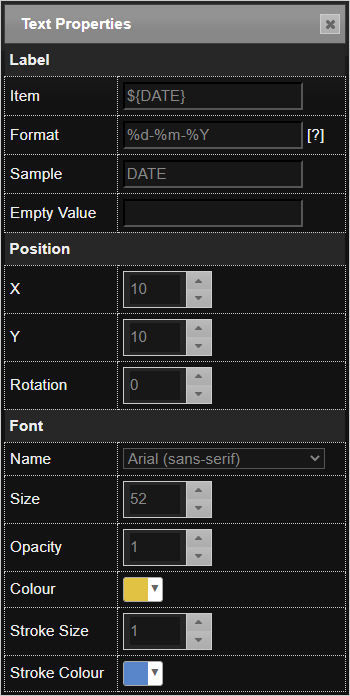
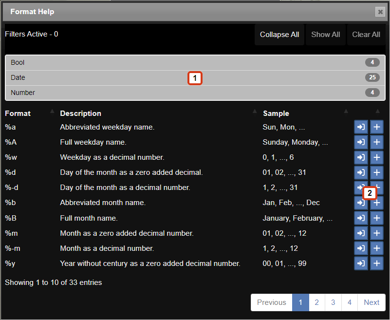

An overlay is information that is added, i.e., overlayed, on top of each captured Allsky image. This often includes the time the image was taken, the sensor temperature, and the exposure length, but can include any other text or images you want.
Allsky has always had the ability to add text to the captured image but in a very limited way. There a new method to add an overlay. You choose the method via the Overlay Method setting in the WebUI's Allsky Settings page.
- The new module method has many new features and is significantly more flexible than the older method. For example, you can add an overlay ONLY to the live image but not to saved images. You can also easily add images and text using a drag-and-drop method.
- The legacy method
allows only text to be placed in a single location on an image with limited formatting.
See the Legacy Overlay Method
page for details on that method.
This page focuses on the module method.
The module method will be the default in the next version of Allsky, and will be the ONLY method in the version after that.
We suggest you start using this method now.
Features
The module method allows almost any information to be added to the captured Allsky image. Some of the key features of this method include:
- Overlay Editor - this is the web page for creating
and managing overlays and supports:
- Drag and Drop interface - Fields can be dragged around the screen to position them.
- Customisable Interface - The Overlay Editor user interface can be highly customised.
- Font Manager - You can upload any TrueType font and use it in the overlays or use any font already on your Pi.
- Variable Manager - Provides a library of fields that you can add to the image. You can also add your own fields.
- Image Manager - Allows you to upload and manage images you wish to add to the image.
- Text Fields - This allows text to be added to the image.:
Key features include:
- Ability to add any data from Allsky to the image
- Ability to add custom (extra) data to the image
- Any TrueType font can be used
- Text can be any colour or size
- Text can be rotated
- Image Fields - This allows images to be added to the image:
- Any image can be uploaded
- Images can be scaled and rotated and their opacity changed
How overlays work
The Overlay Editor web page is used to define what information you want on the captured images and where it should go. Once you have specified that information, you won't use the editor again until you want to change something in the overlay, which typically isn't done very often.
The Overlay Module program is invoked every time an image is captured and places the information you specified in the Overlay Editor onto the image. This module is one of several modules that can be invoked after every image is captured.
In order to use the the Overlay Module you must enable it by going to the WebUI and clicking on the Allsky Settings link, then selecting module in the Image Overlay setting. This disables all the remaining settings in the Image overlay settings section; you will specify those items in the Overlay Editor instead.
In the Overlay Editor you specify what information you want to go where, and what it should look like. For example, you want the date and time the image was taken to be in blue, 12 point font in the upper left of the image and a compass rotated 20 degrees so it's pointing north in the upper right of the image. You also have a graph of weather information you want on the bottom of the image, but because it will hide some of the image you want it to be partially transparent.
After Allsky captures an image it passes that image as well as information about the image to the Overlay Module, including the time the image was taken, the exposure length, and the gain. This information is put into System Variables that can be used per you configuration in the Overlay Editor, which then:
- Replaces the system variables with their values and adds them to the overlay.
- Replaces any other variables with their values and adds them to the overlay.
- Adds any images you specified to the overlay.
Fields and Variables
Fields are the heart of the Overlay Editor. They are distinct items that are added to an overlay and each field has its own properties like color, size, rotation, etc. Most people have several fields on their overlays - date and time the image was taken, the exposure length, etc.
Variables are parts of a field whose value is determined when an image
is saved.
A common variable is ${TIME} which is replaced by the time the image was taken
and changes every image.
Some variables rarely or never change, for example ${CAMERA_MODEL} displays the model
of the camera used to take the image, like "HQ" or "ASI290MM".
It only changes if you change cameras.
See the Variable names section for details on variable names.
There are two types of fields:
- Text fields contain text and/or variables, for example,
Exposure: ${sEXPOSURE}, which adds the wordExposure:followed by the image's exposure time to the overlay. - Image fields contain pictures, graphics, or any image you want and are often used are logos, weather graphs, and compasses.
Variable names:
- Must begin with a letter
a - zorA - Z. - The remaining characters may contain any number of letters, number
0 - 9, or the underscore character_. - Should be prefixed with a string that's unique to you like your initials,
to avoid conflicting with the names of Allsky system variables.
This prefix can be anything except
AS_andALLSKY_. - Should make sense to you.
You are more likely to remember what
${MY_AMBIENT_TEMP}means than${MY_AT}. - By convention are UPPERCASE, but you can mix case,
however, variable names are case-sensitive,
so
${MY_ABIENT_TEMP}and${MY_ABIENT_temp}are different variables.
A variable is a variable name enclosed within
${}, for example, ${sEXPOSURE}.
If you see a variable displayed on the overlay as???it usually means the variable is undefined - either it's not in the Variable Manager at all (could be a typo), or is only in the All Variables tab. The variable needs to be defined and copied to the Allsky Variables tab.
Undefined variables will have a line in /var/log/allsky.log like:ERROR: ${T2} has no variable type; check 'fields.json'.If a variable is displayed as
??it usually means the variable's formatting is incorrect, for example, you tried to display a number as a date. Make sure the formatting is valid for the type of variable - click on the[?]icon to see valid formats for each type of variable.
Incorrectly formatted variables will have a line in /var/log/allsky.log like:ERROR: Cannot use format '%a' on Number variables like ${GAIN}..
Some example text fields are:
| Field | Example Output | Description |
|---|---|---|
${DATE} |
24/10/2023 | Displays the date from the DATE system variable.
The date can be formatted in a variety of ways.
This field contains only a variable. |
Date: ${DATE} |
Date: 24/10/2023 | Displays the text "Date: " then the date the image was taken
from the DATE system variable.
As above, the date can be formatted in a variety of ways.
This field contains text and a variable. |
Date: ${DATE} ${TIME} |
Date: 24/10/2023 23:12:34 | Displays the date and time the image was taken from the DATE and TIME system
variables,
respectively.
Both variables can be formatted in a variety of ways.
This field contains text and two variables. You can have any number of variables you want. |
Date: DATE TIME |
Date: DATE TIME | Because this field doesn't have any variables, it simply displays
"Date: DATE TIME".
This field contains only text. |
Variables come from a variety of sources:
- Allsky - The main Allsky application generates system variables. Also called "system" variables because they are produced by the Allsky system.
- Modules - Any module can create variables.
- Extra Data - Typically created by an application external to Allsky.
1. Allsky variables
The table below shows the most commonly used Allsky variables; a complete list can be found in the Variable Manager.
| Variable | Example Data | Description |
|---|---|---|
${DATE} |
20230228 | The date the image was taken. |
${TIME} |
221623 | The time the image was taken. |
${GAIN} |
4.692540 | The gain used for the image. If auto-gain was disabled, this value will be what you set in the Gain setting in the WebUI, otherwise it's the value the auto-gain algorithm used. |
${AUTOGAIN} |
1 | 1 if auto-gain was enabled, 0 if disabled. Taken from the Auto-Gain WebUI setting. |
${sAUTOGAIN} |
(auto) | A string containing either (auto) if auto-gain was
enabled, or blank. Useful to put after the gain, e.g.,
Gain: ${GAIN} ${sAUTOGAIN}.
|
${EXPOSURE_US} |
218000 | The exposure of the image in micro seconds. If auto-exposure was disabled, this value will be what you set in the Manual Exposure setting in the WebUI, otherwise it's the value the auto-exposure algorithm used. |
${sEXPOSURE} |
218 ms (0.2 sec) | The exposure of the image in a human readable format.
The format changes depending on the exposure time,
for example, very short exposures may be
218.48 ms (0.2 sec)
whereas a long exposure may be 45.3 sec.
|
${AUTOEXPOSURE} |
1 | 1 if auto-exposure was enabled, 0 if auto-exposure was disabled. Taken from the Auto-Exposure WebUI setting. |
${sAUTOEXPOSURE} |
(auto) | A string containing either (auto) or blank -
similar to ${sAUTOGAIN}. |
${TEMPERATURE_C} and ${TEMPERATURE_F} |
36 | The temperature of the camera sensor, if available.
This does NOT include the C or F for
Centigrade or Fahrenheit so you'll need to add them yourself, e.g.,
Sensor Temp: ${TEMPERATURE_C} C.
|
${MEAN} |
0.108564 | The mean brightness value for the image. Values for ZWO cameras are from 0 (pure black) to 255 (pure white). Values for RPi cameras are from 0.0 (pure black) to 1.0 (pure white). |
${BRIGHTNESS} |
0 | The brightness per the Brightness setting in the WebUI. |
2. Module variables
Any module can create variables for use in the
Overlay Module.
For this reason it's important that the Overlay Module
runs as late as possible within the module flow.
As an example, the Star Count Module creates a
variable called ${STARCOUNT} and passes it to the next module.
Please refer to the documentation on each module for the variables they makes available.
3. Extra Data variables - advanced topic
Additional, i.e., "extra" data (text and images) can be added to overlays by defining their attributes in "extra" files.
This is an advanced topic that requires an understanding of the Linux file system and how to manage files within it. The Linux Basics page should provide the understanding you need.
As an example, assume you want to add weather data to your images. You first need to create or obtain a program that gathers that data and writes it to a file. How you obtain that file is outside the scope of this documentation, but the program needs to write the data in a specific format in a file called ~/allsky/config/overlay/extra/xxxxx (replace the xxxxx with an appropriate name).
The "extra" file can be either a simple .txt file or preferably a .json file since it provides much more flexibility. You can have multiple "extra" files (with different names); this can be useful if you want to add different types of data to the overlay, and each type has its own program to gather the data. A typical example is weather data and dew heater status.
Dates
When adding dates to any extra data files please ensure that the date is formatted in the same format as the Time Format setting in WebUI
Text Files
Text files must end with a .txt extension.
The format is a simple name=value structure,
with anything after the = being the value, as shown below:
| Line in File | Resulting Variable |
|---|---|
| AG_TEMP=14.3 | ${AG_TEMP} |
| AG_LOCATION=South Pole | ${AG_LOCATION} |
| AG_HUMIDITY=67.2 | ${AG_HUMIDITY} |
The data in these files could become 'old' if the application creating them fails or is not running. To have Allsky detect this you tell it to ignore "extra" files when they are over a certain age. For .txt files there is a single value which is specified in the Overlay Editor settings dialog box. See the next section for how to specify the expiration time for .json files.
JSON Files
.json files are more complex in their structure but provide a lot more flexibility to add your own variables and even control the attributes of a field.
| The .json file below will produce exactly the same variables as the .txt file described above. The data will expire as defined in the Overlay Editor settings dialog box. | This .json file includes an expiry time (in seconds) for the temperature and humidity, which change often, so those times will be used. The location doesn't specify an expiry time since the location never changes, so the one in the Overlay Editor dialog expiry setting will be used. | This .json file, which has been truncated for brevity, includes all of the attributes that a field can set. It also adds an image. |
|
{
"AG_TEMP": {
"value": "14.3"
},
"AG_LOCATION": {
"value": "South Pole",
},
"AG_HUMIDITY": {
"value": "67.2",
},
}
|
{
"AG_TEMP": {
"value": "14.3",
"expires": 600
},
"AG_LOCATION": {
"value": "South Pole",
},
"AG_HUMIDITY": {
"value": "67.2",
"expires": 600,
},
}
|
{
"AG_TEMP": {
"value": "14.3",
"format": "{:.0f}",
"x": 800,
"y": 200,
"fill": "#333333",
"font": "ledsled",
"fontsize": 40,
"opacity": 0.2,
"stroke": "#000000",
"strokewidth": 1,
},
"AG_SCOPE": {
"image": "crosshair.png",
"x": 300,
"y": 400,
"scale": 0.1,
"expires": 6000,
"opacity": 0.5
}
}
|
A note on the expires field: |
This example demonstrates some important points: |
The "extra" files must be created by an application you provide and there are a few things to consider when creating these files:
- Variable names must be prefixed
with a string that's unique to you, e.g., your initials,
to avoid conflicting with the names of Allsky variables.
The variables in the examples above are prefixed with
AG_. You can use anything exceptAS_andALLSKY_. - Variable values should generally not include units.
For example
${DOME_TEMPERATURE}should be20.72, not20.72° Cbecause20.72is a "Numeric" variable that can be formated (e.g., to20.7) whereas20.72° Cis a "Text" string that can't be formatted. If you want° Cto appear on the overlay, add it in the field itself:
Dome temperature: ${DOME_TEMPERATURE}° C.
Note that°add the degree symbol °. - Permissions - You must ensure that the "extra" files
can be read by the web server.
Adding
chmod 644 file ...to the programs that create the files should suffice. The Overlay Module will silently ignore any files it cannot read.
The Overlay Editor User Interface
The Overlay Editor web page consists of two key areas:
- The toolbar contains icons that perform actions or bring up dialog boxes.
- The working area contains the overlay and the current image in the background.
New fields are initially added to the upper left corner of the overlay but can be moved anywhere you want - just drag and drop!
If you added a field by mistake, delete it by clicking on the icon () before doing anything else.
Here is a typical top portion of the editor, with numbers added to identify the icons:

| Annotation | Icon | Description |
|---|---|---|
|
This is enabled and turns green when any changes have been made that require saving. The word "Modified" is also appended to the tab label, i.e., "Overlay Editor - Modified". This icon is only enabled when leaving certain fields. For example if you change a field label you must click out of the field before this icon will be enabled. |
||
|
Click to add a new field with text and/or variables to the overlay. |
||
|
Click to add an existing image to the overlay. The image must have previously been uploaded using the Image Manager. |
||
|
Click to delete the selected field. The "del" or "delete" keys on the keyboard can also be used. The icon is only enable turns green when a field is selected. |
||
|
Click to add a pre-defined field from the Variable Manager. See the Variable Manager section for more details. |
||
|
Click to display sample data in each of the fields. This is useful to see what actual data will look like on the overlay so you can better align fields. |
||
|
Click to zoom in on the image. |
||
|
Click to zoom out of the image. |
||
|
Click to zoom to the full size of the image. |
||
|
Click to zoom to fit the image on the screen. |
||
|
Displays the Font Manager. See the Font Manager section for more details. |
||
|
Displays the Image Manager. See the Image Manager section for more details. |
||
|
Displays the Overlay Editor settings dialog which allows you to change settings of the manager itself. See the Overlay Editor Settings section for more details. |
||
| Working Area |
The main working area. The image displayed is the last one captured by Allsky. It's best to create overlays when Allsky is running since you'll see the latest image. You can create overlays when Allsky is not running but bear in mind that Notification images (e.g., "Allsky is starting") are usually smaller than those captured by your camera so you may not be using all of the available screen area. |
Using The Overlay Editor
This sub-section details the basic operation of the Overlay Editor and how to manage fields and their contents.
The Variable Manager
The Variable Manager is used to store variables and text that can be used in fields.
The Variable Manager provides a quick method for storing details of the available variables and adding them to the overlay. The manager comes preinstalled with a set of system variables that can be modified but not deleted. You can also add your own variables to the manager; typically these will come from modules or "extra" data files.
The manager consists of two tabs:
- The Allsky Variables tab contains the variables that have been defined and hence can be added to the overlay.
- The All Variables tab contains all variables including ones that have not been defined and hence cannot be added to the overlay.
Allsky Variables tab

|
The Add Variable brings up the "Add Variable" dialog box that allows you to add your own variable and set the variable's Type and other attributes. This button does NOT add the variable to the overlay; instead, it just adds it to the end of the Allsky Variables list so it can be added to the overlay. The search option in the top right can be used to quickly search for a variable by name. Searches are not case sensitive. |
All Variables tab

|
|
This tab lists every variable that Allsky can see and the last value it had, if any. These variables only have a Name as well as possibly their last value. They are not yet defined, i.e., they have no attributes like data Type, Description, Format, or Sample Data.
If this button is disabled then the variable is already in the Allsky Variables tab. The Add Variable button does the same thing as the same button in the Allsky Variables tab. |
The "Add Variable" and "Edit Variable" dialog boxes
Clicking on the Add Variable button or the icon above brings up a dialog box to add or edit a variable. It's the same dialog box in either case, just with a different title. Editing a System Variable will display a message as shown in the image below.

|
|
The Font Manager
The Font Manager supports all mainstream browser fonts and allows you to upload any TrueType font for use in text fields.
|
To use a font it must first be installed in the Font Manager and there are two ways to do this:
- Add font from daFont.com
In a separate browser window, navigate to the font page on http://daFont.com that you wish to install, for example https://www.dafont.com/led-sled.font. Copy the font URL to the clipboard. Click the Add Font button and enter the font URL. The font will be installed and the installed fonts list refreshed. - Upload font via a zip file
First ensure that the font(s) you wish to installed are contained within a zip file. You can create the zip file yourself or download from a place like https://fonts.google.com/. Click the Upload Font button and browse to the zip file. The fonts will be extracted from the zip file and installed.NOTE: If you receive an error when uploading a font please check the php max file upload size. By default this is 2Mb which may be too small for some font zip files
The php configuration file is normally /etc/php/7.4/cgi/php.ini. Edit this file and locate the line containing 'upload_max_filesize =' and change the value. So if the exiting line says 'upload_max_filesize = 2MB' change it to 'upload_max_filesize = 20MB'
Following this change either restart lighttpd with
sudo systemctl restart lighttpd
The Image Manager
The Image Manager allows you to upload images for use on overlays. Allsky comes with several basic images.

|
|
Adding fields to the overlay
There are three ways to add fields to the overlay, two for text fields and one for images.
- Add a new text field
Click the Add New Text Field icon () on the toolbar to display the Text Properties editor. Enter text and/or variables in the Item field of the editor, and set its properties as desired. The property editors are described below. - Add a pre-defined variable in a new field
Click the Variable Manager icon () to display the Allsky Variables list which contains variables you can add to the overlay by clicking the button. The field will start off with just the variable you selected; you can add text or other variables to the field later. See the Variable Manager section for information on the All Variables tab in the Variable Manager. - Add a pre-defined image in a new field
Click the Add Existing Image Field icon () to display the Image Properties editor. Select the image you want from the drop down and then move it to the overlay, resizing and rotating as required. The image must have first been uploaded via the Image Manager as described above.
The property editors
The property editors allow modifying properties of text and image fields.
Text Properties Editor
|  |
The properties in this editor are:
When using "extra" files in JSON format all of the attributes above can be overridden in the file allowing for external control of how fields appear. For example, you may want the CPU temperature to turn red if it gets too hot. |
Image Properties Editor

|
The properties in this editor are:
|
Formatting Variables
Date, Time, Number, and Boolean fields can be formatted to alter their appearance. Each field type has a different set of codes for formatting.
|
The tables below show the more common formats that can be used.
A more detailed and up-to-date list can be found by clicking
on the help icon ( Whilst the Overlay Editor is displaying sample data, changing the Format field will update the sample. The number formats are based upon the formating options available in python. |
|  |
|
Clicking the help icon shown above will display the "Format Help" window. This window can be moved around the screen as required. If you close the properties dialog then the formats window will automatically be hidden.
|
Bool formats
| Format | Description | Output Format |
|---|---|---|
| %yes | Outputs "Yes" if the variable is equal to 1, otherwise "No". | Yes |
| %on | Outputs "On" if the variable is equal to 1, otherwise "Off". | Yes |
| %true | Outputs "True" if the variable is equal to 1, otherwise "False". | Yes |
| %1 | Outputs "1" if the variable is equal to 1, otherwise "0". | Yes |
Bool formats must be lowercase.
Date and Time formats
| Format | Description | Output Format |
|---|---|---|
| %a | Abbreviated weekday name. | Sun, Mon, ... |
| %A | Full weekday name. | Sunday, Monday, ... |
| %w | Weekday as a decimal number. | 0, 1, ..., 6 |
| %d | Day of the month as a zero added decimal. | 01, 02, ..., 31 |
| %-d | Day of the month as a decimal number. | 1, 2, ..., 31 |
| %b | Abbreviated month name. | Jan, Feb, ..., Dec |
| %B | Full month name. | January, February, ... |
| %m | Month as a zero added decimal number. | 01, 02, ..., 12 |
| %-m | Month as a decimal number. | 1, 2, ..., 12 |
| %y | Year without century as a zero added decimal number. | 00, 01, ..., 99 |
| %-y | Year without century as a decimal number. | 0, 1, ..., 99 |
| %Y | Year with century as a decimal number. | 2013, 2019 etc. |
| %H | Hour (24-hour clock) as a zero added decimal number. | 00, 01, ..., 23 |
| %-H | Hour (24-hour clock) as a decimal number. | 0, 1, ..., 23 |
| %I | Hour (12-hour clock) as a zero added decimal number. | 01, 02, ..., 12 |
| %-I | Hour (12-hour clock) as a decimal number. | 1, 2, ..., 12 |
| %p | Locale's AM or PM. | AM, PM |
| %M | Minute as a zero added decimal number. | 00, 01, ..., 59 |
| %-M | Minute as a decimal number. | 0, 1, ..., 59 |
| %S | Second as a zero added decimal number. | 00, 01, ..., 59 |
| %-S | Second as a decimal number. | 0, 1, ..., 59 |
| %f | Microsecond as a decimal number, zero added on the left. Please note that Allsky's times are only to the nearest second. | 000000 ... 999999 |
| %z | UTC offset in the form +HHMM or -HHMM. | +0100 |
| %Z | Time zone name. | Europe/London |
| %j | Day of the year as a zero added decimal number. | 001, 002, ..., 366 |
| %-j | Day of the year as a decimal number. | 1, 2, ..., 366 |
| %U | Week number of the year (Sunday as the first day of the week). All days in a new year preceding the first Sunday are considered to be in week 0. | 00, 01, ..., 53 |
| %W | Week number of the year (Monday as the first day of the week). All days in a new year preceding the first Monday are considered to be in week 0. | 00, 01, ..., 53 |
Number formats
| Format | Description | Output Format |
|---|---|---|
| {:.0f} | Formats a number to 0 decimal places. | 2 |
| {:.1f} | Formats a number to 1 decimal places. Other numbers can be used as well, such as 2, 3, ... | 2.0 |
| {:,} | Use comma for thousands separator. | 86,000 |
| {:n} | Use locale for thousands separator. | 86.000 |
Layout and App Options
Clicking on the Layout and App Options icon in the toolbar brings up the Overlay Editor Options dialog box to manage settings for overlays and the Overlay Editor itself. The dialog box has two tabs, as detailed below.
Layout Defaults tab
These settings apply to overlay layouts.

|
|
The Norad satellite and Planet options can be CPU intensive and are disabled by default. When enabling these please use the Module Manager's "Debug Mode" to ensure these settings are not causing an issue with the performance of the image capture process. Details of how to use the Module Manager's "Debug Mode" are covered in the Module Manager page.
Editor Settings tab
The editor settings apply to the Overlay Editor.

|
|
When changing the brightness settings you may need to click somewhere in the overlay in order for the change to take affect.
Sun / Moon / Planets / Satellites
The Overlay Module can generate data for celestial bodies. All calculations are based upon the Latitude and Longitude in the WebUI.
Because creating this data is CPU intensive, satellite data is only created if at least one entry is in the NORAD ID setting in the Layout Defaults tab of the Overlay Editor Options window, or for the Sun, Moon, and planets, if their associated Include checkboxes are selected in that same window.
Sun, Moon, and ISS variables always appear in the Layout Defaults tab of the Overlay Editor Options window, even if their associated Include checkboxes are NOT selected. Their values will not appear in the overlay until the checkboxes are enabled.
The Sun
Various data are generated for sunrise/sunset etc. All Sun times during daytime capture are for the current day. During nighttime capture:
- Before midnight, the sunset times are for the current date and the sunrise times are for the next date.
- After midnight the sunset times are for the prior date and the sunrise times are for the current date.
The following Sun-related variables are available in the Variable Manager:
| Variable | Description |
|---|---|
| ${SUN_DAWN} | The date and time of dawn. |
| ${SUN_SUNRISE} | The date and time of sunrise. |
| ${SUN_NOON} | The date and time of noon. |
| ${SUN_SUNSET} | The date and time sunset ends. |
| ${SUN_DUSK} | The date and time of dusk. |
| ${SUN_AZIMUTH} | The Azimuth of the Sun. |
| ${SUN_ELEVATION} | The Elevation of the Sun. |
All times are formatted using the format specified in the Time Format setting in the WebUI. This format can be overriden in the Date Time format field of the Overlay Module settings in the Module Manager.
See the screenshot below for this field.
The Moon
The following Moon-related variables are available in the Variable Manager:
| Variable | Example Value | Description |
|---|---|---|
| ${MOON_ELEVATION} | -24.65 | Elevation of the Moon in degrees. |
| ${MOON_AZIMUTH} | 262 | Azimuth of the Moon in degrees. |
| ${MOON_ILLUMINATION} | 7.3 | Illumination of the Moon in %. |
| ${MOON_SYMBOL} | Using this variable in the "moon_phases" font will display a symbol of the current phase of the Moon. |
The planets
The following planet-related variables are available in the Variable Manager:
| Variable | Example Value | Description |
|---|---|---|
| ${MERCURYALT} | -27deg 06' 55.2" | The altitude of Mercury in degrees. |
| ${MERCURYAZ} | 292deg 07' 41.6" | The azimuth of Mercury. |
| ${MERCURYVISIBLE} | No | Yes/No to indicate if Mercury is visible. This does NOT mean its visible to the naked eye just that its above the horizon. |
| ${VENUSALT} | -25deg 03' 52.8" | The altitude of Venus in degrees. |
| ${VENUSAZ} | 282deg 23' 21.9" | The azimuth of Venus. |
| ${VENUSVISIBLE} | No | Yes/No to indicate if Venus is visible. This does NOT mean its visible to the naked eye just that its above the horizon. |
| ${MARSALT} | 03deg 56' 06.7" | The altitude of Mars in degrees. |
| ${MARSAZ} | 55deg 12' 53.7" | The azimuth of Mars. |
| ${MARSVISIBLE} | Yes | Yes/No to indicate if Mars is visible. This does NOT mean its visible to the naked eye just that its above the horizon. |
| ${JUPITERALT} | 29deg 49' 30.9" | The altitude of Jupiter in degrees. |
| ${JUPITERAZ} | 142deg 19' 20.8" | The Azimuth of Jupiter. |
| ${JUPITERVISIBLE} | Yes | Yes/No to indicate if Jupiter is visible. This does NOT mean its visible to the naked eye just that its above the horizon. |
| ${SATURNALT} | 20deg 50' 21.6" | The altitude of Saturn in degrees. |
| ${SATURNAZ} | 187deg 21' 15.3" | The Azimuth of Saturn. |
| ${SATURNVISIBLE} | Yes | Yes/No to indicate if Saturn is visible. This does NOT mean its visible to the naked eye just that its above the horizon. |
| ${URANUSALT} | 21deg 21' 51.3" | The altitude of Uranus in degrees. |
| ${URANUSAZ} | 90deg 10' 23.5" | The azimuth of Uranus. |
| ${URANUSVISIBLE} | Yes | Yes/No to indicate if Uranus is visible. This does NOT mean its visible to the naked eye just that its above the horizon. |
| ${NEPTUNEALT} | 29deg 43' 44.2" | The altitude of Neptune in degrees. |
| ${NEPTUNEAZ} | 150deg 24' 55.8" | The azimuth of Neptune. |
| ${NEPTUNEVISIBLE} | Yes | Yes/No to indicate if Neptune is visible. This does NOT mean its visible to the naked eye just that its above the horizon. |
| ${PLUTOALT} | 10deg 07' 14.9" | The altitude of Pluto in degrees. |
| ${PLUTOAZ} | 207deg 49' 18.1" | The azimuth of Pluto. |
| ${PLUTOVISIBLE} | Yes | Yes/No to indicate if Pluto is visible. This does NOT mean its visible to the naked eye just that its above the horizon. |
Satellites (including the ISS and Hubble)
The Overlay Module can generate position elements for the International Space Station (ISS), the Hubble Space Telescope, and other satellites if their NORID IDs are entered in the Overlay Editor's Norad IDs setting. IDs must be comma-separated.
To find NORAD IDs browse to the Celestrak website and search for the desired objects.

|
|
This example has two Norad IDs:
|
This will generate the following variables that can be used in overlays. Other NORAD IDs would produce similar variables starting with IDs.
| Variable | Example Value | Description |
|---|---|---|
| ${25544ALT} | -32deg 41' 34.3" | The Altitude of the ISS in Degrees. |
| ${25544AZ} | 58deg 46' 59.3" | The Azimuth of the ISS in Degrees. |
| ${25544VISIBLE} | No | Yes/No to indicate if the ISS is above the horizon (it may or may not be visible to the naked eye). |
| ${20580ALT} | -32deg 41' 34.3" | The Altitude of the Hubble in Degrees. |
| ${20580AZ} | 58deg 46' 59.3" | The Azimuth of the Hubble in Degrees. |
| ${20580VISIBLE} | No | Yes/No to indicate if the Hubble is above the horizon (it may or may not be visible to the naked eye). |